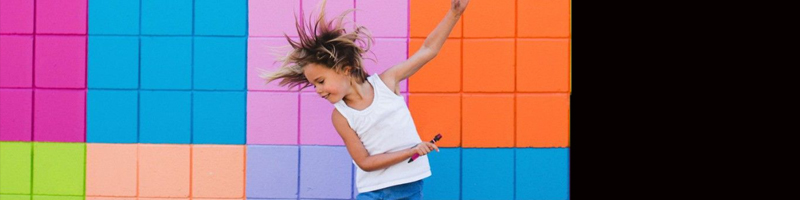
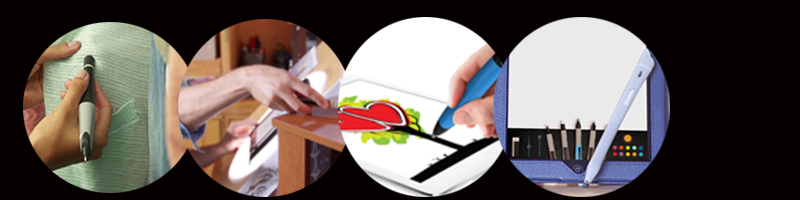

Present: Today's Use
 WANT TO LEARN MORE?
Click on the picture above^ and it will take you to the official
Scribble Pen website!
If you get your creativity kicks by putting a pen to paper, or a stylus to your electronic device, but want to do it in the accurate colors of your world, your wish may have come true. The Scribble Pen uses "smart ink" technology to accurately mix the ink to the color you select with the RGB color sensor scanner at the back end of the pen.
Scribble offers the pen for paper, the Scribble Smart Stylus for electronic devices, and the Motley Pen for kids. All the Scribble Pens have a color scanner at one end and a pen or stylus tip at the other. They come with a selection of drawing tips to control stroke weight. The refillable ink cartridges connect to a smart miscro pump that creates the custom color you have scanned when you want it. Colors are coded as Pantone, CMYK and HEX as well as RGB and can be saved in a custom library.
RGB Color Sensor
The built in color sensor lets you easily capture any color- simply point it at an object or surface and press the button! Draw or write with it right away, or save it to sync with your mobile devices.
Multiple Drawing Tips
The Scribble Pen comes with three different sizes of drawing tip, allowing you the freedom to express yourself as neatly or boldy as you like. Scribble is perfect for both drawing and accurate writing.
Refillable Ink Cartridge
The Scribble Pen comes with three different sizes of drawing tip, allowing you the freedom to express yourself as neatly or boldy as you like. Scribble is perfect for both drawing and accurate writing.Scribble's technologically advanced ink is lightfast and water-resistant - no matter the weather, it won't fade away.
IT'S ACTUALLY VERY EASY!!!
Step 1: Ready the Pen
Step 2: Scan your color
Step 3: Draw to your heart's content
Specifications to the Tool
The Scribble Pen is compatible with iOS 7+ and Android 4.0+. It connects via Bluetooth or MicroUSB. The batteries can be charged with the micro-USB cable and will last about 7 hours for pen, 15 hours for stylus and 10 hours for the kid's Motley pen.
Price:$249 $399
Combatibility:iOS 7+, Android 4.0+
Connectivity:Bluetooth Smart, Micro USB
Battery Life:7 hours
Color Sensor:RGB Sensor
Tip:3 tip sizes to control stroke weight
Dimension:156.51mm x 14.85mm (6.16 x 0.58 in.)
